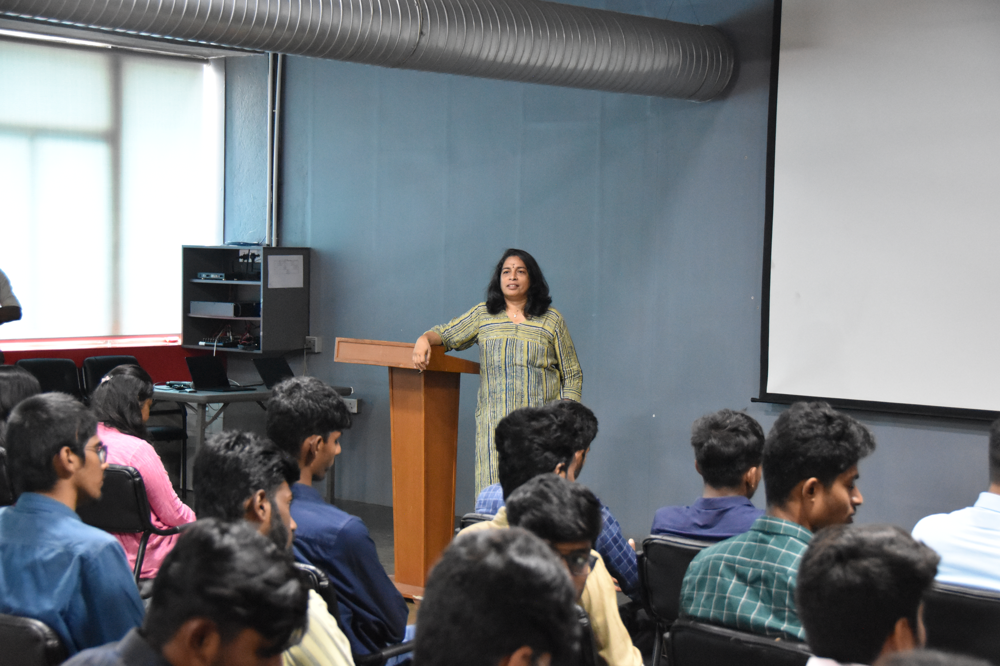
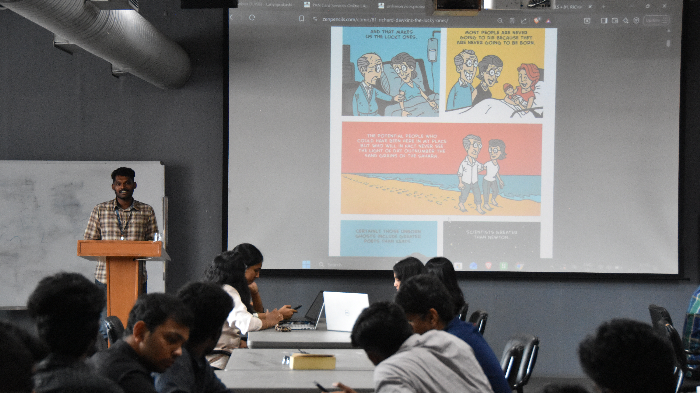
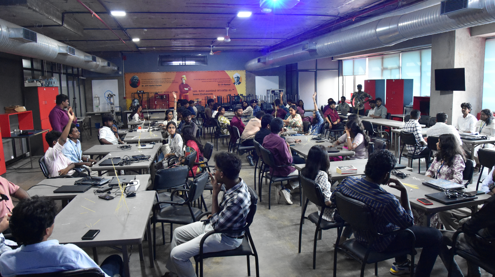
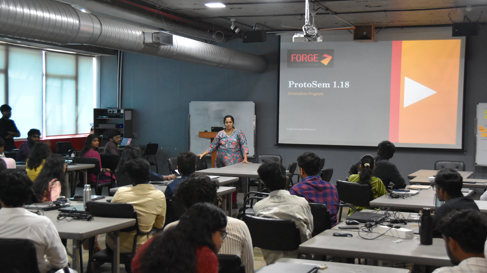
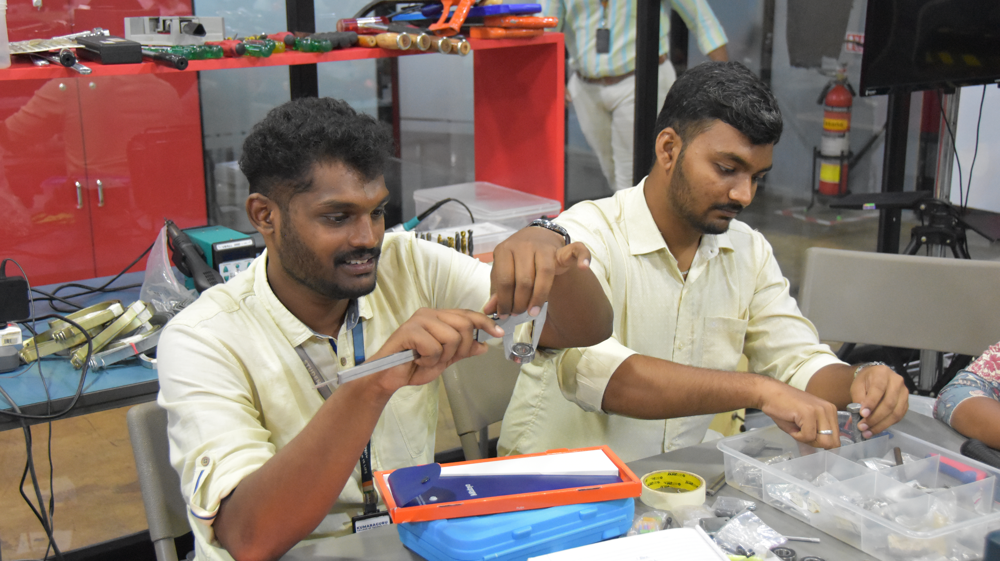
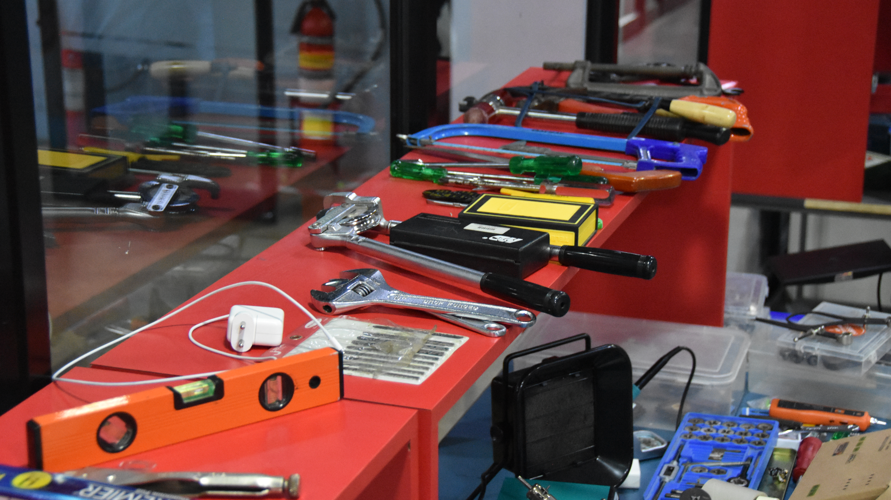
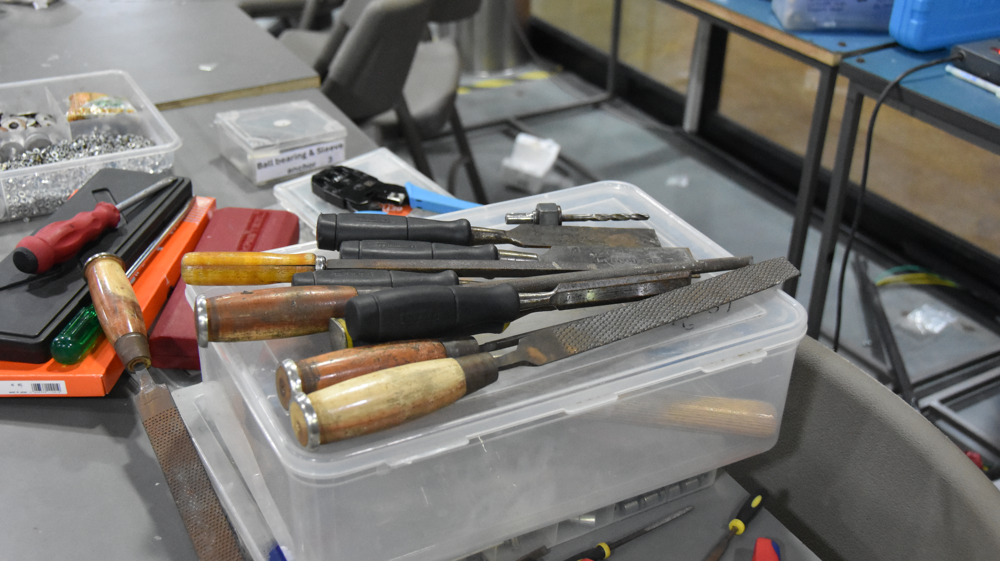
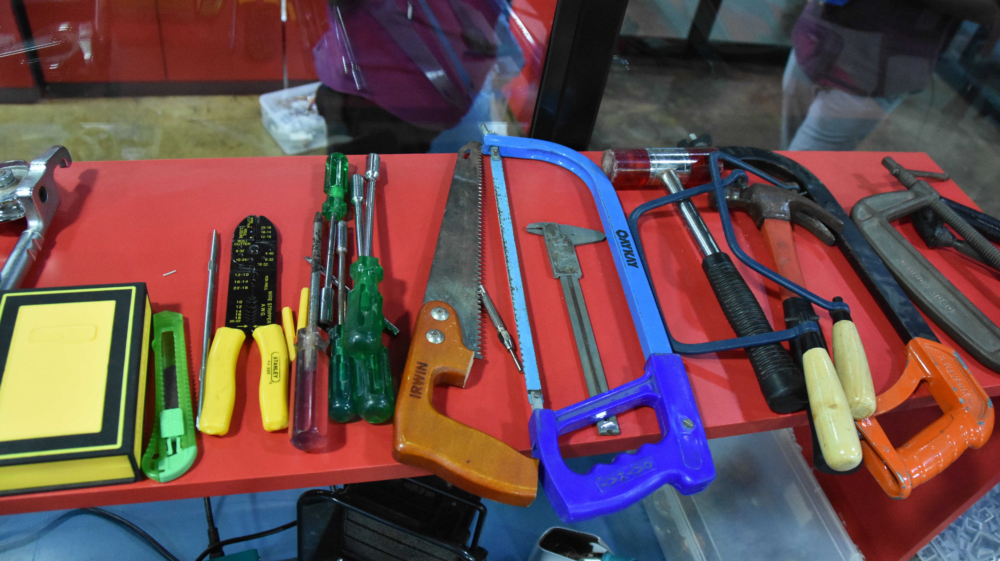
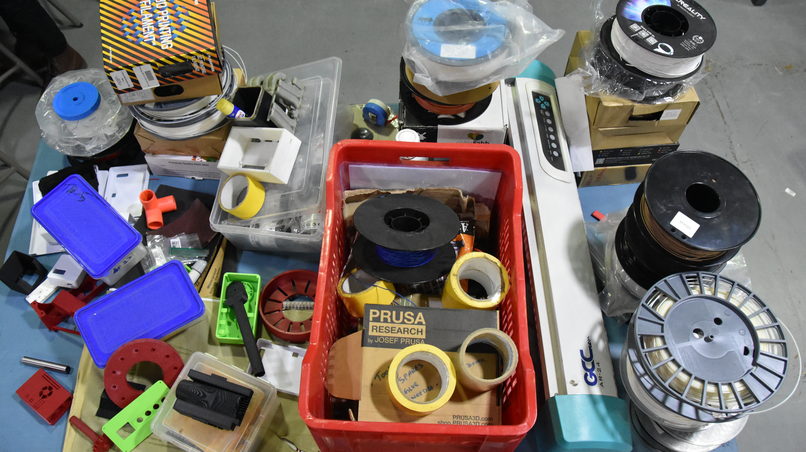

ProtoSem
Weekly learning updates
Week 0
16 Personality Test16 Personality Test
Completed a personality assessment to understand strengths, thinking style, and workplace behavior.



Week 1
5S Implementation5S Implementation
Learned and applied the 5S methodology for organizing workspaces, improving efficiency, and maintaining discipline.



Week 2
Tool Identification and WorkshopTool Identification and Workshop
Explored and identified various hand tools, measuring instruments, and workshop essentials used in fabrication and maintenance tasks.






Week 3
UpcomingWeek 3
Upload your Week 3 work and photos here whenever you are ready.